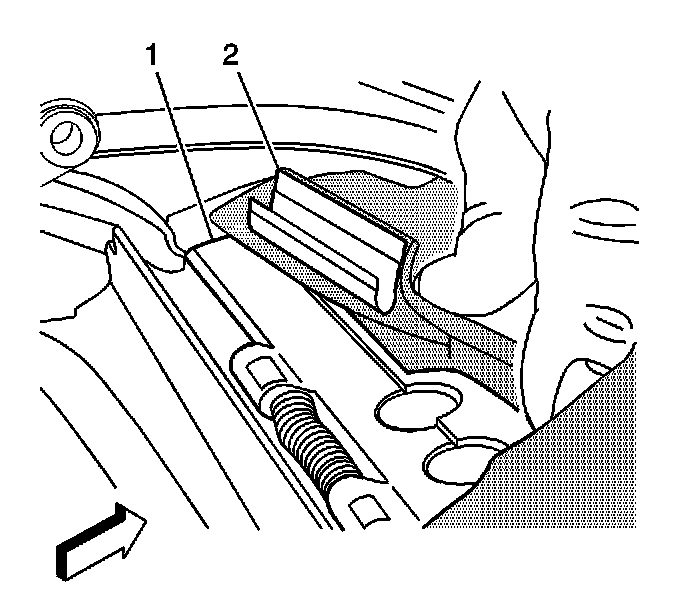
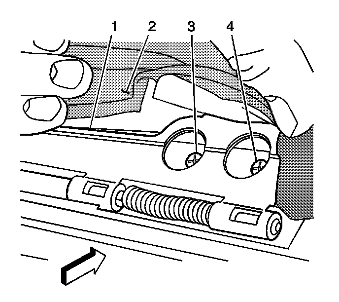
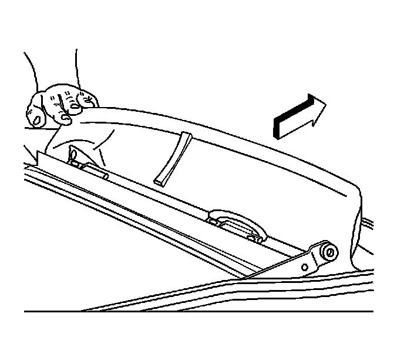

Sunroof / Moonroof Windguard: Service and Repair
Sunroof Air Deflector Replacement
Removal Procedure
1. Open the front sunroof window until the air deflector is in the full upright position.

2. Remove the air deflector fabric cover by releasing the J-strips (2) from the deflector frame (1).

3. Remove the screws (3, 4) securing the hinges on the air deflector to the sunroof module assembly.
4. Remove the air deflector from the sunroof module assembly.
Installation Procedure
1. Ensure that the spring loaded bases are rotated forward and are evenly aligned with the holes in the sunroof module assembly.

2. Position the air deflector bases to the sunroof module assembly.
3. Pull the air deflector hinges outward in order to secure the hinges to the module assembly.
4. Loosely install the hinge screws.
5. Center the air deflector side to side on the sunroof module assembly.
Notice: Refer to Fastener Notice (Fastener Notice) .
6. Secure the air deflector screws (3, 4).
Tighten the screws to 5 N.m (44 lb in).
7. Install the air deflector fabric cover with sewn-in J-strips.
8. Ensure that the bumper (2) is secure to the sunroof module assembly.
9. Secure the foam pad at the front side of the deflector in order to prevent noise when the air deflector moves to the closed position.
10. Close the front sunroof window.
11. Verify the operation of the air deflector.